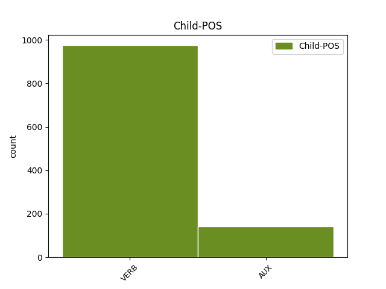

Distribution of features within this leaf

Agreement Rules sorted by frequency.
- When the dependent token is the direct object complements(comp:obj) of the head token,
1 καὶ _ _ _ _ 0 _ _ _
2 ἐδόθη _ _ _ _ 0 _ _ _
3 αὐτῷ _ _ _ _ 0 _ _ _
4 δοῦναι _ _ _ _ 0 _ _ _
5 πνεῦμα _ _ _ _ 0 _ _ _
6 τῇ _ _ _ _ 0 _ _ _
7 εἰκόνι _ _ _ _ 0 _ _ _
8 τοῦ _ _ _ _ 0 _ _ _
9 θηρίου _ _ _ _ 0 _ _ _
10 ἵνα _ _ _ _ 0 _ _ _
11 καὶ _ _ _ _ 0 _ _ _
12 λαλήσῃ _ _ _ _ 0 _ _ _
13 ἡ _ _ _ _ 0 _ _ _
14 εἰκὼν _ _ _ _ 0 _ _ _
15 τοῦ _ _ _ _ 0 _ _ _
16 θηρίου _ _ _ _ 0 _ _ _
17 καὶ _ _ _ _ 0 _ _ _
18 ποιήσῃ ποιέω VERB V- Aspect=Perf|Mood=Sub|Number=Sing|Person=3|Tense=Past|VerbForm=Fin|Voice=Act 0 _ _ _
19 ὅσοι _ _ _ _ 0 _ _ _
20 ἐὰν _ _ _ _ 0 _ _ _
21 μὴ _ _ _ _ 0 _ _ _
22 προσκυνήσουσιν _ _ _ _ 0 _ _ _
23 τῇ _ _ _ _ 0 _ _ _
24 εἰκόνι _ _ _ _ 0 _ _ _
25 τοῦ _ _ _ _ 0 _ _ _
26 θηρίου _ _ _ _ 0 _ _ _
27 ἀποκτανθῶσιν ἀποκτείνω VERB V- Aspect=Perf|Mood=Sub|Number=Plur|Person=3|Tense=Past|VerbForm=Fin|Voice=Pass 18 comp:obj _ ref=REV_13.15
1 καὶ _ _ _ _ 0 _ _ _
2 ὁ _ _ _ _ 0 _ _ _
3 δράκων _ _ _ _ 0 _ _ _
4 ἕστηκεν _ _ _ _ 0 _ _ _
5 ἐνώπιον _ _ _ _ 0 _ _ _
6 τῆς _ _ _ _ 0 _ _ _
7 γυναικὸς _ _ _ _ 0 _ _ _
8 τῆς _ _ _ _ 0 _ _ _
9 μελλούσης _ _ _ _ 0 _ _ _
10 τεκεῖν _ _ _ _ 0 _ _ _
11 ἵνα _ _ _ _ 0 _ _ _
12 ὅταν _ _ _ _ 0 _ _ _
13 τέκῃ τίκτω VERB V- Aspect=Perf|Mood=Sub|Number=Sing|Person=3|Tense=Past|VerbForm=Fin|Voice=Act 17 mod _ ref=REV_12.4
14 τὸ _ _ _ _ 0 _ _ _
15 τέκνον _ _ _ _ 0 _ _ _
16 αὐτῆς _ _ _ _ 0 _ _ _
17 καταφάγῃ κατεσθίω VERB V- Aspect=Perf|Mood=Sub|Number=Sing|Person=3|Tense=Past|VerbForm=Fin|Voice=Act 0 _ _ _
1 ἀντὶ _ _ _ _ 0 _ _ _
2 τοῦ _ _ _ _ 0 _ _ _
3 λέγειν _ _ _ _ 0 _ _ _
4 ὑμᾶς _ _ _ _ 0 _ _ _
5 ἐὰν _ _ _ _ 0 _ _ _
6 ὁ _ _ _ _ 0 _ _ _
7 κύριος _ _ _ _ 0 _ _ _
8 θελήσῃ _ _ _ _ 0 _ _ _
9 καὶ _ _ _ _ 0 _ _ _
10 ζήσομεν ζῶ VERB V- Mood=Ind|Number=Plur|Person=1|Tense=Fut|VerbForm=Fin|Voice=Act 18 parataxis _ ref=JAS_4.15
11 καὶ _ _ _ _ 0 _ _ _
12 ποιήσομεν _ _ _ _ 0 _ _ _
13 τοῦτο _ _ _ _ 0 _ _ _
14 ἢ _ _ _ _ 0 _ _ _
15 ἐκεῖνο _ _ _ _ 0 _ _ _
16 νῦν _ _ _ _ 0 _ _ _
17 δὲ _ _ _ _ 0 _ _ _
18 καυχᾶσθε καυχάομαι VERB V- Mood=Ind|Number=Plur|Person=2|Tense=Pres|VerbForm=Fin|Voice=Mid 0 _ _ _
19 ἐν _ _ _ _ 0 _ _ _
20 ταῖς _ _ _ _ 0 _ _ _
21 ἀλαζονίαις _ _ _ _ 0 _ _ _
22 ὑμῶν _ _ _ _ 0 _ _ _
1 καὶ _ _ _ _ 0 _ _ _
2 καθ’ _ _ _ _ 0 _ _ _
3 ὅσον _ _ _ _ 0 _ _ _
4 ἀπόκειται ἀπόκειμαι VERB V- Mood=Ind|Number=Sing|Person=3|Tense=Pres|VerbForm=Fin|Voice=Mid 28 dislocated _ ref=HEB_9.27
5 τοῖς _ _ _ _ 0 _ _ _
6 ἀνθρώποις _ _ _ _ 0 _ _ _
7 ἅπαξ _ _ _ _ 0 _ _ _
8 ἀποθανεῖν _ _ _ _ 0 _ _ _
9 μετὰ _ _ _ _ 0 _ _ _
10 δὲ _ _ _ _ 0 _ _ _
11 τοῦτο _ _ _ _ 0 _ _ _
12 κρίσις _ _ _ _ 0 _ _ _
13 οὕτως _ _ _ _ 0 _ _ _
14 καὶ _ _ _ _ 0 _ _ _
15 ὁ _ _ _ _ 0 _ _ _
16 Χριστός _ _ _ _ 0 _ _ _
17 ἅπαξ _ _ _ _ 0 _ _ _
18 προσενεχθεὶς _ _ _ _ 0 _ _ _
19 εἰς _ _ _ _ 0 _ _ _
20 τὸ _ _ _ _ 0 _ _ _
21 πολλῶν _ _ _ _ 0 _ _ _
22 ἀνενεγκεῖν _ _ _ _ 0 _ _ _
23 ἁμαρτίας _ _ _ _ 0 _ _ _
24 ἐκ _ _ _ _ 0 _ _ _
25 δευτέρου _ _ _ _ 0 _ _ _
26 χωρὶς _ _ _ _ 0 _ _ _
27 ἁμαρτίας _ _ _ _ 0 _ _ _
28 ὀφθήσεται ὁράω VERB V- Mood=Ind|Number=Sing|Person=3|Tense=Fut|VerbForm=Fin|Voice=Pass 0 _ _ _
29 τοῖς _ _ _ _ 0 _ _ _
30 αὐτὸν _ _ _ _ 0 _ _ _
31 ἀπεκδεχομένοις _ _ _ _ 0 _ _ _
32 εἰς _ _ _ _ 0 _ _ _
33 σωτηρίαν _ _ _ _ 0 _ _ _
1 περιῆλθον περιέρχομαι VERB V- Aspect=Perf|Mood=Ind|Number=Plur|Person=3|Tense=Past|VerbForm=Fin|Voice=Act 0 _ _ _
2 ἐν _ _ _ _ 0 _ _ _
3 μηλωταῖς _ _ _ _ 0 _ _ _
4 ἐν _ _ _ _ 0 _ _ _
5 αἰγείοις _ _ _ _ 0 _ _ _
6 δέρμασιν _ _ _ _ 0 _ _ _
7 ὑστερούμενοι _ _ _ _ 0 _ _ _
8 θλιβόμενοι _ _ _ _ 0 _ _ _
9 κακουχούμενοι _ _ _ _ 0 _ _ _
10 ὧν _ _ _ _ 0 _ _ _
11 οὐκ _ _ _ _ 0 _ _ _
12 ἦν εἰμί AUX V- Aspect=Imp|Mood=Ind|Number=Sing|Person=3|Tense=Past|VerbForm=Fin|Voice=Act 1 subj _ LId=1|ref=HEB_11.38
13 ἄξιος _ _ _ _ 0 _ _ _
14 ὁ _ _ _ _ 0 _ _ _
15 κόσμος _ _ _ _ 0 _ _ _
16 ἐπὶ _ _ _ _ 0 _ _ _
17 ἐρημίαις _ _ _ _ 0 _ _ _
18 πλανώμενοι _ _ _ _ 0 _ _ _
19 καὶ _ _ _ _ 0 _ _ _
20 ὄρεσιν _ _ _ _ 0 _ _ _
21 καὶ _ _ _ _ 0 _ _ _
22 σπηλαίοις _ _ _ _ 0 _ _ _
23 καὶ _ _ _ _ 0 _ _ _
24 ταῖς _ _ _ _ 0 _ _ _
25 ὀπαῖς _ _ _ _ 0 _ _ _
26 τῆς _ _ _ _ 0 _ _ _
27 γῆς _ _ _ _ 0 _ _ _
1 κατηργήθητε καταργέω VERB V- Aspect=Perf|Mood=Ind|Number=Plur|Person=2|Tense=Past|VerbForm=Fin|Voice=Pass 0 _ _ _
2 ἀπὸ _ _ _ _ 0 _ _ _
3 Χριστοῦ _ _ _ _ 0 _ _ _
4 οἵτινες _ _ _ _ 0 _ _ _
5 ἐν _ _ _ _ 0 _ _ _
6 νόμῳ _ _ _ _ 0 _ _ _
7 δικαιοῦσθε δικαιόω VERB V- Mood=Ind|Number=Plur|Person=2|Tense=Pres|VerbForm=Fin|Voice=Pass 1 subj@pass _ ref=GAL_5.4
1 οὗτοί _ _ _ _ 0 _ _ _
2 εἰσιν εἰμί AUX V- Mood=Ind|Number=Plur|Person=3|Tense=Pres|VerbForm=Fin|Voice=Act 0 _ _ _
3 οἳ _ _ _ _ 0 _ _ _
4 μετὰ _ _ _ _ 0 _ _ _
5 γυναικῶν _ _ _ _ 0 _ _ _
6 οὐκ _ _ _ _ 0 _ _ _
7 ἐμολύνθησαν μολύνω VERB V- Aspect=Perf|Mood=Ind|Number=Plur|Person=3|Tense=Past|VerbForm=Fin|Voice=Pass 2 comp:pred _ ref=REV_14.4
1 ὕπαγε ὑπάγω VERB V- Mood=Imp|Number=Sing|Person=2|Tense=Pres|VerbForm=Fin|Voice=Act 2 vocative _ ref=JOHN_9.7
2 νίψαι νίπτω VERB V- Aspect=Perf|Mood=Imp|Number=Sing|Person=2|Tense=Past|VerbForm=Fin|Voice=Mid 0 _ _ _
3 εἰς _ _ _ _ 0 _ _ _
4 τὴν _ _ _ _ 0 _ _ _
5 κολυμβήθραν _ _ _ _ 0 _ _ _
6 τοῦ _ _ _ _ 0 _ _ _
7 Σιλωάμ _ _ _ _ 0 _ _ _
8 ὃ _ _ _ _ 0 _ _ _
9 ἑρμηνεύεται _ _ _ _ 0 _ _ _
10 ἀπεσταλμένος _ _ _ _ 0 _ _ _
1 Χάριν _ _ _ _ 0 _ _ _
2 ἔχω _ _ _ _ 0 _ _ _
3 τῷ _ _ _ _ 0 _ _ _
4 θεῷ _ _ _ _ 0 _ _ _
5 ᾧ _ _ _ _ 0 _ _ _
6 λατρεύω _ _ _ _ 0 _ _ _
7 ἀπὸ _ _ _ _ 0 _ _ _
8 προγόνων _ _ _ _ 0 _ _ _
9 ἐν _ _ _ _ 0 _ _ _
10 καθαρᾷ _ _ _ _ 0 _ _ _
11 συνειδήσει _ _ _ _ 0 _ _ _
12 ὡς _ _ _ _ 0 _ _ _
13 ἀδιάλειπτον _ _ _ _ 0 _ _ _
14 ἔχω _ _ _ _ 0 _ _ _
15 τὴν _ _ _ _ 0 _ _ _
16 περὶ _ _ _ _ 0 _ _ _
17 σοῦ _ _ _ _ 0 _ _ _
18 μνείαν _ _ _ _ 0 _ _ _
19 ἐν _ _ _ _ 0 _ _ _
20 ταῖς _ _ _ _ 0 _ _ _
21 δεήσεσίν _ _ _ _ 0 _ _ _
22 μου _ _ _ _ 0 _ _ _
23 νυκτὸς _ _ _ _ 0 _ _ _
24 καὶ _ _ _ _ 0 _ _ _
25 ἡμέρας _ _ _ _ 0 _ _ _
26 ἐπιποθῶν _ _ _ _ 0 _ _ _
27 σε _ _ _ _ 0 _ _ _
28 ἰδεῖν _ _ _ _ 0 _ _ _
29 μεμνημένος _ _ _ _ 0 _ _ _
30 σου _ _ _ _ 0 _ _ _
31 τῶν _ _ _ _ 0 _ _ _
32 δακρύων _ _ _ _ 0 _ _ _
33 ἵνα _ _ _ _ 0 _ _ _
34 χαρᾶς _ _ _ _ 0 _ _ _
35 πληρωθῶ _ _ _ _ 0 _ _ _
36 ὑπόμνησιν _ _ _ _ 0 _ _ _
37 λαβὼν _ _ _ _ 0 _ _ _
38 τῆς _ _ _ _ 0 _ _ _
39 ἐν _ _ _ _ 0 _ _ _
40 σοὶ _ _ _ _ 0 _ _ _
41 ἀνυποκρίτου _ _ _ _ 0 _ _ _
42 πίστεως _ _ _ _ 0 _ _ _
43 ἥτις _ _ _ _ 0 _ _ _
44 ἐνῴκησεν ἐνοικέω VERB V- Aspect=Perf|Mood=Ind|Number=Sing|Person=3|Tense=Past|VerbForm=Fin|Voice=Act 0 _ _ _
45 πρῶτον _ _ _ _ 0 _ _ _
46 ἐν _ _ _ _ 0 _ _ _
47 τῇ _ _ _ _ 0 _ _ _
48 μάμμῃ _ _ _ _ 0 _ _ _
49 σου _ _ _ _ 0 _ _ _
50 Λωΐδι _ _ _ _ 0 _ _ _
51 καὶ _ _ _ _ 0 _ _ _
52 τῇ _ _ _ _ 0 _ _ _
53 μητρί _ _ _ _ 0 _ _ _
54 σου _ _ _ _ 0 _ _ _
55 Εὐνίκῃ _ _ _ _ 0 _ _ _
56 πέπεισμαι πείθω VERB V- Aspect=Perf|Mood=Ind|Number=Sing|Person=1|Tense=Past|VerbForm=Fin|Voice=Pass 44 orphan _ ref=2TIM_1.5
57 δὲ _ _ _ _ 0 _ _ _
58 ὅτι _ _ _ _ 0 _ _ _
59 καὶ _ _ _ _ 0 _ _ _
60 ἐν _ _ _ _ 0 _ _ _
61 σοί _ _ _ _ 0 _ _ _
Disagree Examples:
1 ὣς _ _ _ _ 0 _ _ _
2 δὲ _ _ _ _ 0 _ _ _
3 τὰ _ _ _ _ 0 _ _ _
4 κατὰ _ _ _ _ 0 _ _ _
5 τὸν _ _ _ _ 0 _ _ _
6 Τέλλον _ _ _ _ 0 _ _ _
7 προετρέψατο _ _ _ _ 0 _ _ _
8 ὁ _ _ _ _ 0 _ _ _
9 Σόλων _ _ _ _ 0 _ _ _
10 τὸν _ _ _ _ 0 _ _ _
11 Κροῖσον _ _ _ _ 0 _ _ _
12 εἴπας _ _ _ _ 0 _ _ _
13 πολλά _ _ _ _ 0 _ _ _
14 τε _ _ _ _ 0 _ _ _
15 καὶ _ _ _ _ 0 _ _ _
16 ὀλβία _ _ _ _ 0 _ _ _
17 ἐπειρώτα ἐπερωτάω VERB V- Aspect=Imp|Mood=Ind|Number=Sing|Person=3|Tense=Past|VerbForm=Fin|Voice=Act 0 _ _ _
18 τίνα _ _ _ _ 0 _ _ _
19 δεύτερον _ _ _ _ 0 _ _ _
20 μετ’ _ _ _ _ 0 _ _ _
21 ἐκεῖνον _ _ _ _ 0 _ _ _
22 ἴδοι ὁράω VERB V- Aspect=Perf|Mood=Opt|Number=Sing|Person=3|Tense=Past|VerbForm=Fin|Voice=Act 17 comp:obj _ ref=1.31.1
23 δοκέων _ _ _ _ 0 _ _ _
24 πάγχυ _ _ _ _ 0 _ _ _
25 δευτερεῖα _ _ _ _ 0 _ _ _
26 γῶν _ _ _ _ 0 _ _ _
27 οἴσεσθαι _ _ _ _ 0 _ _ _
1 ἐπείτε _ _ _ _ 0 _ _ _
2 δὲ _ _ _ _ 0 _ _ _
3 τὰ _ _ _ _ 0 _ _ _
4 νομιζόμενα _ _ _ _ 0 _ _ _
5 ἐποίησε _ _ _ _ 0 _ _ _
6 ὁ _ _ _ _ 0 _ _ _
7 Κροῖσος _ _ _ _ 0 _ _ _
8 ἐπυνθάνετο πυνθάνομαι VERB V- Aspect=Imp|Mood=Ind|Number=Sing|Person=3|Tense=Past|VerbForm=Fin|Voice=Mid 0 _ _ _
9 ὁκόθεν _ _ _ _ 0 _ _ _
10 τε _ _ _ _ 0 _ _ _
11 καὶ _ _ _ _ 0 _ _ _
12 τίς _ _ _ _ 0 _ _ _
13 εἴη εἰμί AUX V- Mood=Opt|Number=Sing|Person=3|Tense=Pres|VerbForm=Fin|Voice=Act 8 comp:obj _ LId=1|ref=1.35.2
14 λέγων _ _ _ _ 0 _ _ _
15 τάδε _ _ _ _ 0 _ _ _
1 νῦν _ _ _ _ 0 _ _ _
2 δέ _ _ _ _ 0 _ _ _
3 ἐπείτε _ _ _ _ 0 _ _ _
4 σὺ _ _ _ _ 0 _ _ _
5 σπεύδεις _ _ _ _ 0 _ _ _
6 καὶ _ _ _ _ 0 _ _ _
7 δεῖ _ _ _ _ 0 _ _ _
8 τοί _ _ _ _ 0 _ _ _
9 χαρίζεσθαι _ _ _ _ 0 _ _ _
10 ὀφείλω ὀφείλω VERB V- Mood=Sub|Number=Sing|Person=1|Tense=Pres|VerbForm=Fin|Voice=Act 16 parataxis _ ref=1.42.2
11 γάρ _ _ _ _ 0 _ _ _
12 σε _ _ _ _ 0 _ _ _
13 ἀμείβεσθαι _ _ _ _ 0 _ _ _
14 χρηστοῖσι _ _ _ _ 0 _ _ _
15 ποιέειν _ _ _ _ 0 _ _ _
16 εἰμὶ εἰμί AUX V- Mood=Ind|Number=Sing|Person=1|Tense=Pres|VerbForm=Fin|Voice=Act 0 _ _ _
17 ἕτοιμος _ _ _ _ 0 _ _ _
18 ταῦτα _ _ _ _ 0 _ _ _
1 μετὰ _ _ _ _ 0 _ _ _
2 δὲ _ _ _ _ 0 _ _ _
3 ταῦτα _ _ _ _ 0 _ _ _
4 ἐφρόντιζε φροντίζω VERB V- Aspect=Imp|Mood=Ind|Number=Sing|Person=3|Tense=Past|VerbForm=Fin|Voice=Act 0 _ _ _
5 ἱστορέων _ _ _ _ 0 _ _ _
6 τοὺς _ _ _ _ 0 _ _ _
7 ἂν _ _ _ _ 0 _ _ _
8 Ἑλλήνων _ _ _ _ 0 _ _ _
9 δυνατωτάτους _ _ _ _ 0 _ _ _
10 ἐόντας _ _ _ _ 0 _ _ _
11 προσκτήσαιτο προσκτάομαι VERB V- Aspect=Perf|Mood=Opt|Number=Sing|Person=3|Tense=Past|VerbForm=Fin|Voice=Mid 4 comp:obj _ ref=1.56.1
12 φίλους _ _ _ _ 0 _ _ _
1 ἐπειδὴ _ _ _ _ 0 _ _ _
2 αἰεὶ _ _ _ _ 0 _ _ _
3 τῷ _ _ _ _ 0 _ _ _
4 πολέμῳ _ _ _ _ 0 _ _ _
5 ἑσσοῦντο _ _ _ _ 0 _ _ _
6 ὑπὸ _ _ _ _ 0 _ _ _
7 Τεγεητέων _ _ _ _ 0 _ _ _
8 πέμψαντες _ _ _ _ 0 _ _ _
9 θεοπρόπους _ _ _ _ 0 _ _ _
10 ἐς _ _ _ _ 0 _ _ _
11 Δελφοὺς _ _ _ _ 0 _ _ _
12 ἐπειρώτων ἐπερωτάω VERB V- Aspect=Imp|Mood=Ind|Number=Plur|Person=3|Tense=Past|VerbForm=Fin|Voice=Act 0 _ _ _
13 τίνα _ _ _ _ 0 _ _ _
14 ἂν _ _ _ _ 0 _ _ _
15 θεῶν _ _ _ _ 0 _ _ _
16 ἱλασάμενοι _ _ _ _ 0 _ _ _
17 κατύπερθε _ _ _ _ 0 _ _ _
18 τῷ _ _ _ _ 0 _ _ _
19 πολέμῳ _ _ _ _ 0 _ _ _
20 Τεγεητέων _ _ _ _ 0 _ _ _
21 γενοίατο γίγνομαι VERB V- Aspect=Perf|Mood=Opt|Number=Plur|Person=3|Tense=Past|VerbForm=Fin|Voice=Mid 12 comp:obj _ ref=1.67.2